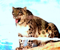

人気の動物たち
ZOO LOGICALでは、特にゴリラ、ホッキョクグマなどが人気です。動物たちも皆さんに会えるのを楽しみにしています。ぜひ、会いに来てください。
-
 ゴリラ
ゴリラ
優しい性格で、バナナや葉だけではなく、昆虫も食べる雑食動物です。 -
ホッキョクグマ
泳ぎが大得意で、何十kmも海を泳ぐことができます。 -
 ニホンザル
ニホンザル
群れをつくり集団生活をしています。知能が高く学習能力があります。 -
 シマウマ
シマウマ
名前の由来であるその縦模様は、外敵から身を守る保護色といわれています。 -
 ツキノワグマ
ツキノワグマ
特徴は胸の三日月形の模様です。昼にも活動しますが、実は夜行性です。 -
ヒョウ
ご飯は木の上で食べることもあります。食事の時間にはその姿が見られるかもしれません。